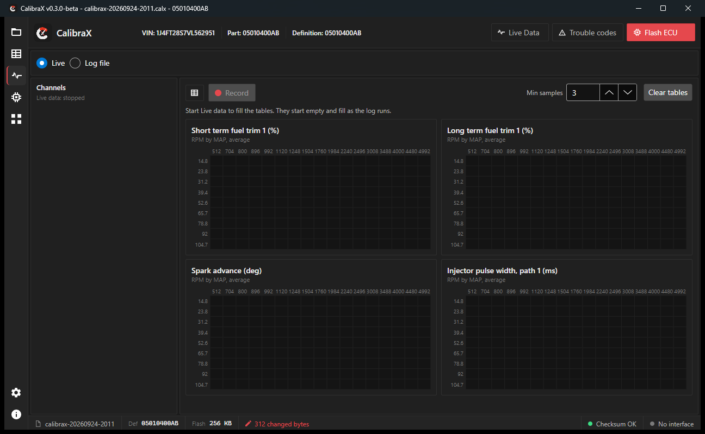
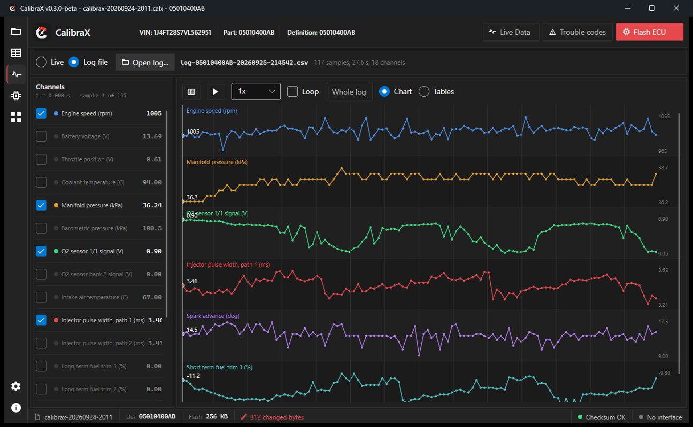
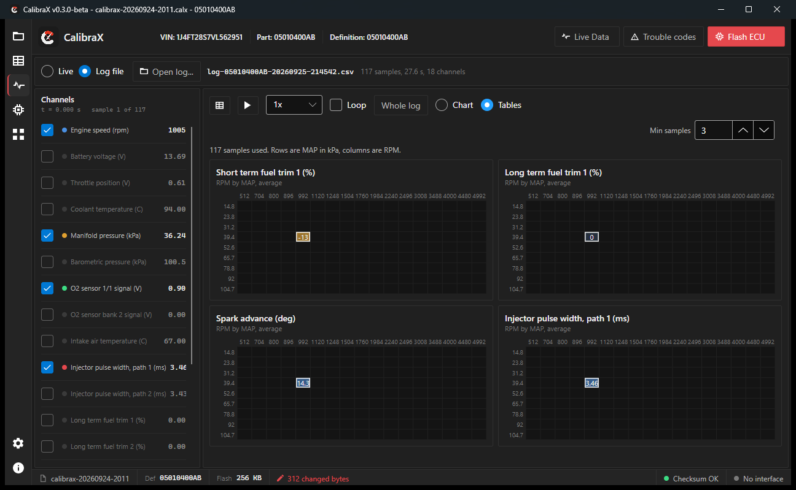

A Windows calibration editor for Chrysler, Jeep and Dodge engine controllers. Every table and scalar opens with the right units, scaling and axes for your part number.
Free to read and edit. Writing flash needs a license.
Correct units, scaling and axis breakpoints per part number. No hand-picked offsets.
Check every edit against the original flash, with a count of what changed in each table.
See any table as a grid, a curve or a surface.
Read the flash over a J2534 pass-thru interface, or open a saved project.
Live engine data, recorded to CSV, with fuel trim, spark and pulse width tables that fill in as you drive.
Stored, pending and one-trip codes, named from your calibration.
Extra tools inside the app, starting with a byte-level hex editor. Some need a license.
Checksum-checked flash writing. Needs a license.



| Year | ECU | Vehicle | Engines | Read / write |
|---|
Coverage is by part number; more are added with every release. "Untested" means nobody has confirmed it on a vehicle yet.
Portable, self-contained .exe for Windows. No .NET install. Unzip and run CalibraX.exe.
If Windows SmartScreen warns about the file, choose More info, then Run anyway. The build has no paid code-signing certificate yet.
Reading and editing are free. Writing flash and some apps need a license: contact the developer.
Any J2534 pass-thru device. What has been tried:
| Scanmatik 2 Pro (SM2 Pro) | Validated |
| Autel MaxiFlash / V200 | Untested |
| Drew Technologies Mongoose Pro | Untested |